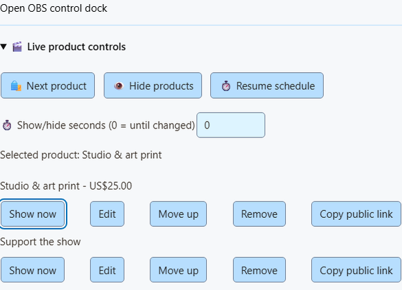
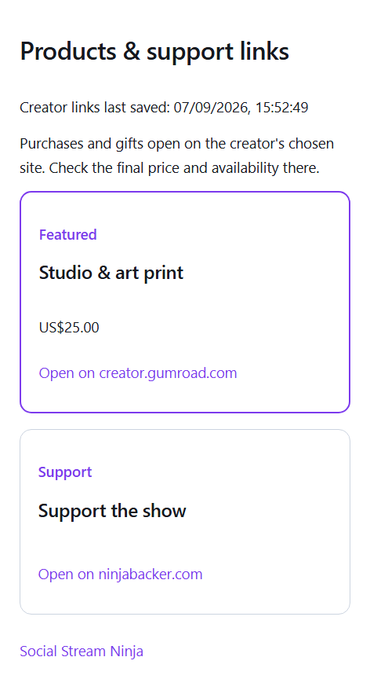

Utiliza la superposición de monetización como fuente de navegador de OBS para tu audiencia. Contrólala desde SSN, Stream Deck o la API. Un panel de control puede utilizar la misma API por separado; los controles del operador no deben aparecer en la superposición para la audiencia.
1. Añade un enlace de producto o apoyo
Abre Monetización > Productos y enlaces de apoyo > Configurar productos y enlaces. Pega un enlace HTTPS público y elige Cargar detalles del enlace (Load details from link). La importación rápida admite páginas públicas de Gumroad, itch.io, Ko-fi, Buy Me a Coffee y Fourthwall. Los dominios personalizados, redirecciones, páginas privadas y páginas sin metadatos públicos pueden requerir una entrada manual. Las opciones existentes de importación por API de Shopify y Fourthwall siguen disponibles.
Comprueba el título, la imagen, el precio, la moneda y la finalidad. La importación rápida deja el precio vacío deliberadamente. Elige Añadir producto o enlace, habilita Productos y enlaces de apoyo y luego Guardar configuración. No se necesita una cuenta de comerciante para las tarjetas manuales.
Comprar, Regalar, Apoyar y Unirse describen la finalidad del enlace. No cambian la clasificación de los eventos de pago posteriores. Las tarjetas son instantáneas guardadas; la página de pago es la referencia para existencias y precios.
2. Controla lo que aparece
Añade a OBS la URL existente de la superposición Productos y enlaces de apoyo. Utiliza Escaparate (Showcase) o Tarjeta de apoyo (Support card) para promociones, o Ambos (Both) para incluir alertas de actividad.
- Mostrar ahora (Show now) en una fila guardada fija ese producto y anula la programación periódica de tarjetas.
- Siguiente producto (Next product) fija el siguiente producto guardado.
- Ocultar productos (Hide products) oculta las tarjetas promocionales. Las alertas de compras y regalos continúan.
- Reanudar programación (Resume schedule) restaura los ajustes guardados de primer producto o rotación.
Configura los segundos de Mostrar/ocultar antes de utilizar un control. Cero dura hasta que se cambie; de 1 a 3600 restaura la programación guardada tras ese número de segundos. Los cambios temporales en vivo se restablecen al reiniciar SSN. Las filas sin guardar se marcan y sus botones Mostrar ahora siguen desactivados hasta Guardar configuración (Save setup). El estado indica el producto seleccionado y los segundos restantes; no afirma que OBS esté en directo ni que la fuente esté visible. Los controles identifican un producto por su URL guardada exacta, así que moverlo en la lista no rompe una automatización.


3. Publica un enlace para espectadores
Abre Opciones de visualización > Página pública para espectadores y elige Publicar enlaces guardados (Publish saved links). Esto publica explícitamente todos los enlaces guardados de productos y apoyo, incluidos títulos, imágenes, precios y finalidades. Comparte Copiar enlace para espectadores (Copy viewer link) con tus espectadores. Los códigos QR de los productos ahora utilizan esta página estable, así que un espectador puede encontrar un producto incluso después de que la superposición rote.
Los cambios guardados y los controles en vivo actualizan la misma URL. La página para espectadores busca actualizaciones cada 15 segundos y etiqueta el producto destacado. Mantiene accesibles los otros enlaces cuando las tarjetas promocionales están ocultas. El último catálogo publicado sigue accesible cuando SSN está desconectado; se muestra la fecha de guardado, y «destacado» significa la última selección o rotación guardada, no una prueba de que el creador esté en directo.
Retirar publicación (Unpublish) elimina la página; los códigos QR de productos vuelven a los enlaces individuales. Las páginas abiertas para espectadores se vacían en su siguiente comprobación correcta. Las URL compartidas anteriormente dejan de cargar hasta que publiques de nuevo. Volver a publicar desde el mismo dispositivo restaura la misma URL. Conserva el perfil del dispositivo de SSN: su clave privada de publicación es necesaria para actualizar o eliminar la página.
Si la API no está disponible, los controles locales siguen funcionando. Las actualizaciones fallidas dejan visible la última página publicada y vuelven a intentarse mientras SSN está abierto. La ventana emergente informa del fallo. Para publicar, el servicio opcional de tienda pública debe estar desplegado; no interviene ninguna cuenta de tienda ni de pagos.


Event Flow y controles remotos
En Event Flow, añade la acción Productos y apoyo del grupo de acciones de superposición. Selecciona Mostrar, Siguiente, Ocultar o Reanudar; opcionalmente, indica la URL exacta del producto guardado y los segundos. Utiliza un activador existente adecuado, como tu propio comando de moderador, en vez de permitir que cada mensaje del chat cambie los productos.
En el complemento de Stream Deck, añade teclas de Comando predefinido (Preset Command) desde Productos y apoyo (Products & support): Mostrar producto (Show product), Siguiente producto (Next product), Ocultar productos (Hide products) y Reanudar productos (Resume products). Mostrar incluye un selector de productos guardados; elige Actualizar productos y estado (Refresh products and state) para cargar la lista. Una selección guardada no disponible sigue visible en vez de cambiar silenciosamente. También puedes pegar la URL pública del producto o dejarla vacía para el producto actual o el primero. Siguiente y Ocultar admiten segundos opcionales. Las teclas esperan a que SSN confirme el cambio local, independientemente de las actualizaciones de la página pública. Añade la tecla opcional Estado del producto (Product State) para ver si está seleccionado, oculto o programado, con actualización cada cinco segundos mientras la tecla esté visible. El inspector y SSN muestran el nombre completo; la pequeña tecla de estado recorta los nombres largos. Utiliza la conexión P2P o WebSocket existente.
La API remota de sesión autenticada existente acepta el mismo control:
{"action":"commerceControl","command":"show","url":"https://example.com/product","seconds":30}Los comandos son show, next, hide y resume. Omite la URL para mostrar el producto actual o el primero. Los controles del anfitrión deben estar activados. Nunca compartas una URL privada de sesión o control con los espectadores; utiliza el enlace publicado para espectadores.
Estas acciones solo difunden el estado existente monetization_update estado de visualización. No crean donaciones, compras, publicaciones en el chat ni activadores de pago de Event Flow. El comportamiento existente de hasDonation mantiene su comportamiento.
Saber cuándo terminó un control
La acción Productos y apoyo espera la respuesta de SSN antes de continuar el flujo. En los datos habituales de eventos, meta.commerceControlResult contiene success y el resultado commerce estado de control o un error. Un fallo detiene las acciones posteriores de esa cadena; la compra o propina original sigue disponible para otros flujos y superposiciones. El estado confirma la selección de SSN, el estado oculto o la programación; la visibilidad en OBS es independiente.
Si no llega una respuesta en ocho segundos, la acción informa de un tiempo de espera agotado. El control puede haberse aplicado: comprueba el estado en la ventana emergente o el panel antes de volver a pulsar Siguiente. Los clientes remotos externos deben utilizar el protocolo existente de solicitud/respuesta y comprobar el resultado devuelto, en vez de considerar exitoso un comando solo por haberlo enviado.
Otros efectos tienen su propia información de resultado. Imprimir etiqueta térmica (Print Thermal Label) informa de meta.thermalPrintResult; enviar correctamente un trabajo no confirma que haya salido en papel. Una acción Webhook síncrona puede devolver el estado HTTP y la respuesta, y detenerse ante un fallo. Son resultados de acciones, no nuevos eventos de pago. Consulta la referencia de eventos para el contrato de resultados de control.
Configuración de tiendas para creadores · Sonidos, acciones e impresión de comercio · Referencia de eventos
¿Prefieres botones dentro de OBS? Utiliza el dock de control de productos de OBS junto a tu fuente de navegador para la audiencia.